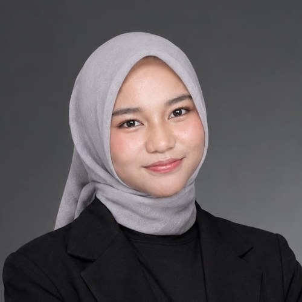

2024 - Sekarang | UIN Ar-Raniry | S1 Teknologi Informasi
Mahasiswa Fakultas Sains dan Teknologi dengan IPK 3,80.

240705160@student.ar-raniry.ac.id | github.com/Husnaa1111
Mahasiswa Teknologi Informasi | Riset Lapangan & Administrasi Strategis
Saya mahasiswa Teknologi Informasi UIN Ar-Raniry yang berfokus pada riset lapangan dan administrasi strategis. Saya berpengalaman menyusun ide, mengumpulkan data lapangan, membuat pitch deck lomba, serta mengelola proposal sponsor dan audiensi di UKM TESSA. Saya ingin terus mendalami tata kelola teknologi publik.
Mahasiswa Fakultas Sains dan Teknologi dengan IPK 3,80.
Membuat notulensi rapat, laporan progres pencarian sponsor, absensi setiap rapat, dan pemberitahuan rapat.
Menyusun proposal acara dan TOR, serta membuat pemberitahuan rapat, notulensi, dan absensi.
Mengikuti pengkaderan dan kegiatan himpunan mahasiswa Teknologi Informasi.
Aplikasi web untuk memantau gizi balita saat posyandu, yang menjadi project utama tim kami di lomba. Peran saya: riset lapangan dan penyusunan pitch deck. Lihat GitHub.